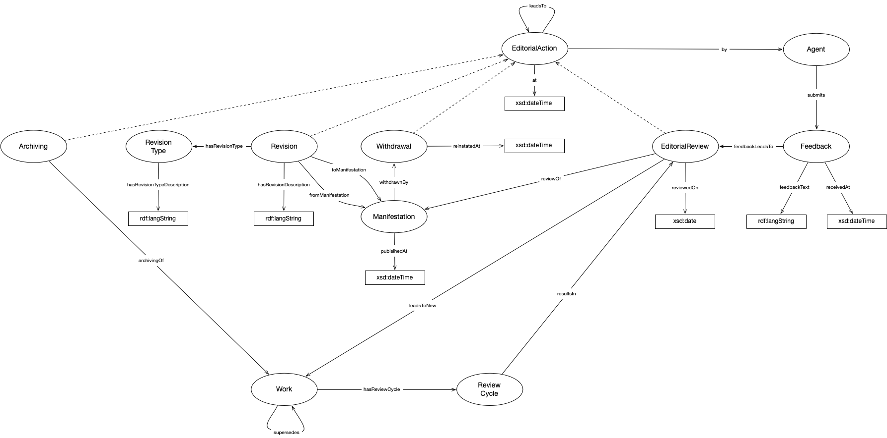

IRI: http://parliament.uk/ontologies/record-review/Agent
IRI: http://parliament.uk/ontologies/record-review/Archiving
IRI: http://parliament.uk/ontologies/record-review/Feedback
IRI: http://parliament.uk/ontologies/record-review/Manifestation
IRI: http://parliament.uk/ontologies/record-review/Review
IRI: http://parliament.uk/ontologies/record-review/ReviewCycle
IRI: http://parliament.uk/ontologies/record-review/Revision
IRI: http://parliament.uk/ontologies/record-review/RevisionType
IRI: http://parliament.uk/ontologies/record-review/Submission
IRI: http://parliament.uk/ontologies/record-review/Withdrawal
IRI: http://parliament.uk/ontologies/record-review/Work
IRI: http://parliament.uk/ontologies/record-review/archivingOf
IRI: http://parliament.uk/ontologies/record-review/feedbackLeadsTo
IRI: http://parliament.uk/ontologies/record-review/fromManifestation
IRI: http://parliament.uk/ontologies/record-review/hasReviewCycle
IRI: http://parliament.uk/ontologies/record-review/hasRevisionType
IRI: http://parliament.uk/ontologies/record-review/makes
IRI: http://parliament.uk/ontologies/record-review/of
IRI: http://parliament.uk/ontologies/record-review/receivedBy
IRI: http://parliament.uk/ontologies/record-review/resultsInReview
IRI: http://parliament.uk/ontologies/record-review/reviewLeadsToArchiving
IRI: http://parliament.uk/ontologies/record-review/reviewLeadsToNewWork
IRI: http://parliament.uk/ontologies/record-review/reviewLeadsToRevision
IRI: http://parliament.uk/ontologies/record-review/reviewLeadsToWithdrawal
IRI: http://parliament.uk/ontologies/record-review/reviewOf
IRI: http://parliament.uk/ontologies/record-review/reviewedBy
IRI: http://parliament.uk/ontologies/record-review/supersedes
IRI: http://parliament.uk/ontologies/record-review/toManifestation
IRI: http://parliament.uk/ontologies/record-review/withdrawnBy
IRI: http://parliament.uk/ontologies/record-review/archivedAt
IRI: http://parliament.uk/ontologies/record-review/feedbackText
IRI: http://parliament.uk/ontologies/record-review/hasRevisionDescription
IRI: http://parliament.uk/ontologies/record-review/hasRevisionTypeDescription
IRI: http://parliament.uk/ontologies/record-review/publishedAt
IRI: http://parliament.uk/ontologies/record-review/receivedAt
IRI: http://parliament.uk/ontologies/record-review/reinstatedAt
IRI: http://parliament.uk/ontologies/record-review/reviewedOn
IRI: http://parliament.uk/ontologies/record-review/submittedAt
IRI: http://parliament.uk/ontologies/record-review/withdrawnAt
This HTML document was obtained by processing the OWL ontology source code through LODE, Live OWL Documentation Environment, developed by Silvio Peroni.